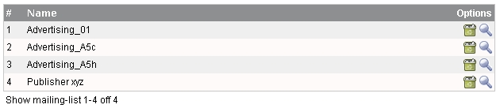
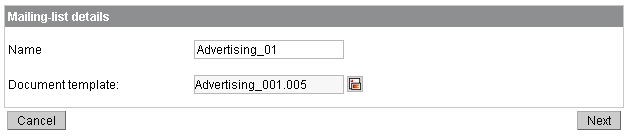
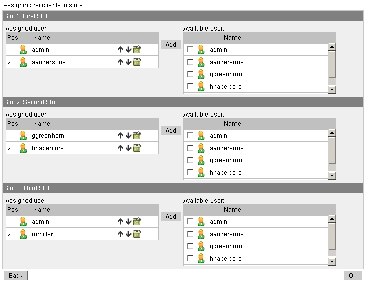

To manage the mailing lists, click on "Mailing list" in the menu (left-side). After that you will see a list of all available
mailing lists (for all circulations).

There you can use the following actions:
Adding a new mailing list to the list
Deleting the selected mailing list
Edit the settings for the selected mailing list
New Mailing list / Edit a Mailing list - Step 1
If you add a mailing list or clicked to edit an existing one you will get a page like the following:

Type in a name that should be used for the mailing list (i.e. "Standard_Constrcution_List") and select a
defined document template.
New Mailing list / Edit a mailing list - Step 2
The last step is for assigning users (receivers) to the slots of the document template. You can select users on the right table of each slot and add them with the "Add"-Button.

In the next step you can send your first circulation message. >> Circulations